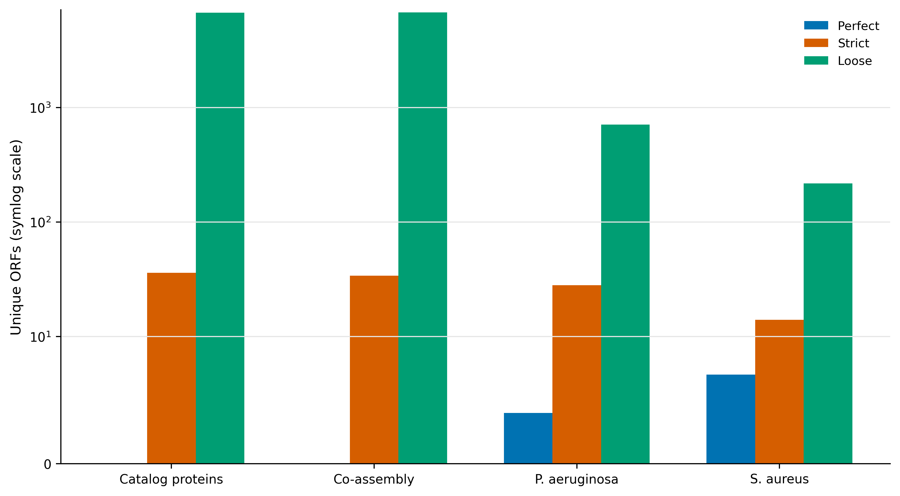
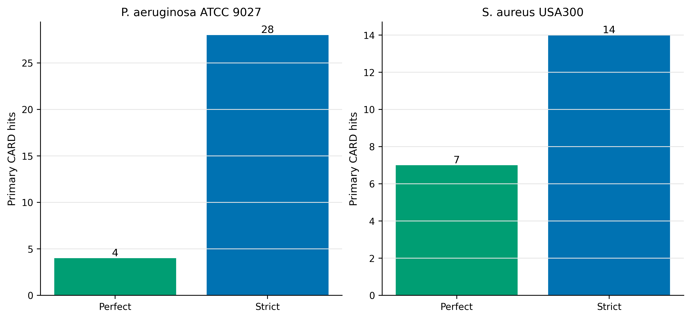
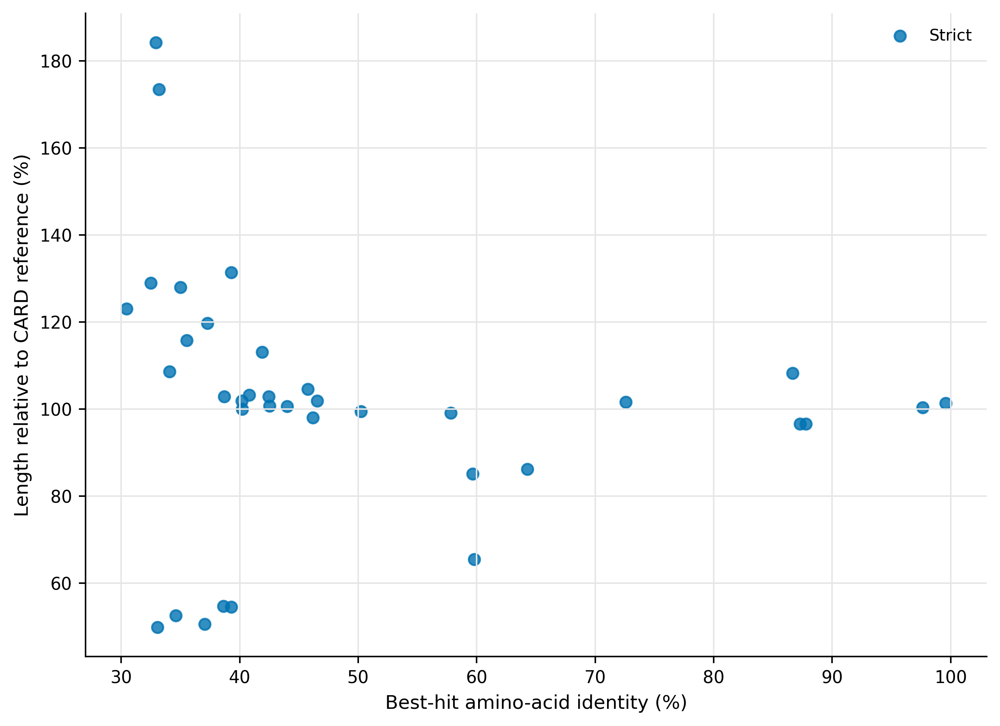
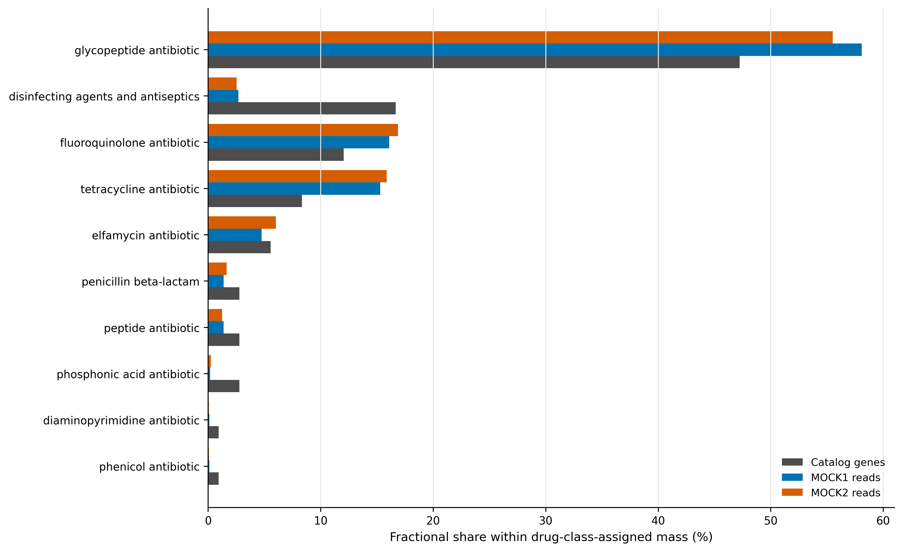

Resistome 专题：CARD-RGI / deepARG——证据分级与表型边界
学习目标：用 Resistance Gene Identifier（RGI）调用 Comprehensive Antibiotic Resistance Database（CARD）的 model-aware resistome；分清 Perfect、Strict 与 Loose；理解 protein 与 contig 分支能看见的模型不同；用正控验证流程；把 ARG sequence evidence 与 antimicrobial susceptibility phenotype 分开。
真实数据：93,782 条 Article 34 catalog proteins、Article 30 的 18,354 条 \(≥1\) kb co-assembly contigs（84.81 Mb），以及 Pseudomonas aeruginosa ATCC 9027 和 Staphylococcus aureus USA300 FPR3757。catalog read weights来自 Article 35。
结论边界：RGI 命中表示 sequence/model evidence；它不等同于 isolate 的 MIC、临床耐药、基因表达或可移动性。Loose 不进入主 ARG abundance。
序列相似性、归属证据与表型结果需要分开；缺少相应验证时，结论停留在抗性相关遗传潜力。
检出抗性相关序列，能说明表型耐药吗？
锚定 CARD 2023 的数据库/模型框架与在线 RGI 部分：CARD 把 curated reference sequences、Antibiotic Resistance Ontology（ARO）和 detection models 连在一起，不是把所有 ARG 压成一个固定 identity threshold (Alcock 等 2023年)。该论文的 model inventory 也说明 homolog、variant、overexpression 与 rRNA models 的可观测输入并不相同。
DeepARG 使用深度学习从 sequence features 预测 ARG category，适合扩展候选搜索，但原始 DeepARG 1.0.4 的软件与训练数据库已经形成 legacy stack (Arango-Argoty 等 2018年)。本文把它放在隔离的 sensitivity environment，不让它替代 CARD-RGI 的 curated model thresholds。

catalog protein 分支共输出 6,799 hits，其中 36 条为 Strict，0 条为 Perfect，6,763 条为 Loose。主 resistome 只包含 Perfect + Strict；Loose 是预先声明的 sensitivity set。若把全部输出行都叫 ARG，结果会被 6,763 个低于 curated model threshold 的候选支配。
准备输入与数据库
准备器核对两种 catalog FASTA、co-assembly、controls、CARD canonical archive 与 loaded card.json；CARD _version 必须为 4.0.1。
protein catalog 主分析
输入类型决定可观测模型
| Input | 优势 | 主要盲点 |
|---|---|---|
| Protein catalog | 快；可直接连接 gene abundance；适合 protein homolog models | 看不到 rRNA variants；核苷酸位点与 contig context 丢失；partial ORF 可能截断 |
| Nucleotide contigs | 可重新 call ORFs；可捕获部分 nucleotide/variant context；保留邻域 | 短 contig 会截断；宿主/MGE 归属仍需 binning/plasmid/long reads |
| Raw reads | 可减少 assembly loss，适合专用 read-level pipeline | 多重比对、短片段 specificity 与单位定义更困难 |
本次 catalog 与 co-assembly 两条分支并行：protein 主分支用于 gene/read weighting；contig 分支用于检查输入模型与 context sensitivity。它们不是两个独立生物学重复。
--include_loose 只为了生成 sensitivity ledger；主筛选仍为 Cut_Off %in% c("Perfect", "Strict")。本次不启用 --include_nudge，避免将近阈值 Loose 自动改写成 Strict。
Loose 只回答“候选有多大”
catalog 中 6,763 个 Loose genes 是主集合的 188 倍。报告它们的价值是说明 uncertainty envelope，而不是把 sensitivity 当 discovery yield。若研究目标是新 ARG discovery，Loose 还需结构域、保守位点、synteny、宿主背景和实验功能验证。
contig 与正控分支
contig 核心参数为 -t contig --low_quality -g PYRODIGAL；co-assembly 的 data type 为 wgs，完整 controls 为 chromosome。--low_quality 允许研究 draft contigs，却不能把 partial model 命中解释为完整 resistance cassette。
正控验证 pipeline，不验证所有表型
P. aeruginosa 正控有 4 Perfect + 28 Strict；S. aureus 正控有 7 Perfect + 14 Strict，并检出 mecA 等高相似度 hits。正控证明安装、数据库和输入模式能回收已知 sequence evidence；它不替代 AST，也不能证明每个命中的药物类别都在当前培养条件下表达。

- 把 RGI 输出的全部行都叫 ARG，不区分 Perfect/Strict/Loose。
- 用统一 identity cutoff 覆盖 CARD model-specific thresholds。
- 开启 nudge 却不报告，导致 Loose/Strict 边界不可复现。
- protein catalog 分支声称捕获 rRNA resistance variants 或完整 nucleotide context。
- 把 efflux pump、porin、regulator hit 直接写成临床耐药。
- 将同一多药 gene 完整复制到多个 drug classes，造成 abundance 膨胀。
- 没有正控、数据库 release、
card.jsonSHA-256 或工具版本。
补回零命中并构建主/敏感性 ledger
ARG presence 到 phenotype 还缺三座桥
耐药表型至少取决于：完整且正确的 resistance allele、表达/调控与宿主背景、抗菌药物和实验条件。对 efflux pump、porin、regulator、target mutation 尤其如此。一个 sequence hit 既不能证明 expression，也不能证明 MIC 超过临床 breakpoint。
GeneID Completeness EvidenceTier PrimaryARG BestHitARO ModelType DrugClasses
megahit-co__c000001_1 Partial No hit no - - -
megahit-co__c000002_1 Incomplete No hit no - - -
megahit-co__c000003_1 Partial Loose no ... protein homolog model ...完整表有 93,782 行。36 个主 genes 在 MOCK1/MOCK2 分别承载 1,682/1,778 assigned reads，即约 0.060%/0.064% 的 catalog-assigned read mass；这是相对 read evidence，不是每毫升 ARG copies。
读取保存表与结果核对
三个 tier 的含义
- Perfect：query 与 CARD curated reference model 的预期序列完全匹配；这不是“表型必然耐药”。
- Strict：通过相应 CARD detection model 的 curated bit-score/variant rule，但不要求 100% identity。
- Loose：有一定相似性，却没有通过该 model 的 Strict 门槛；可用于发现候选，不宜直接作 prevalence 或 abundance 主结果。
因此不存在一个可以替代 RGI model rules 的统一“identity $≥90% 即 ARG”公式。不同 families 的可区分近邻、长度与 resistance-conferring variants 不同。
多药类别必须 fractional allocation
一条 ARG 可以对应多个 drug classes。若有 \(m_g\) 个 classes，class \(k\) 的 gene mass 为 \(1/m_g\)，read mass 为 \(c_{gs}/m_g\)。主集合的 fractional gene equivalents 必须闭合到 36，另外保留 GenesWithLabel 表示 overlap。

不再用统一 identity cutoff 代替 model rule
36 个 catalog primary genes 全部为 Strict；其 amino-acid identities 和 reference-length ratios 跨越较宽范围。它们通过的是各自 CARD model 的 bit-score/variant contract。图中的 identity 只用于审计，不应反过来造一个全 families 通用门槛。
从 gene list 升级为守恒的 drug-class profile
36 个 primary genes 主要落在 target alteration、efflux 与 inactivation 三类 mechanisms；drug classes 以 glycopeptide、disinfectant/antiseptic、fluoroquinolone 和 tetracycline 为主。多药 genes 采用 fractional allocation，因此 class totals 不会凭空超过 36。

DeepARG 的合理位置
DeepARG 可作为预先声明的 ML sensitivity branch，但必须记录模型/数据库 snapshot，并与 RGI 主集合画 overlap，而不能将 DeepARG score 与 CARD Strict 混成同一 confidence。原始 DeepARG 1.0.4 的 legacy dependencies 需隔离；若无法完整锁定训练数据库，结果只能用于探索。
区分序列检出与表型结论
Methods template
Antimicrobial resistance determinants were identified with RGI v6.0.8 and CARD v4.0.1. Protein-catalogue searches used DIAMOND v2.2.4, whereas nucleotide contigs and control genomes were processed in low-quality contig mode with Pyrodigal v3.7.1. Perfect and Strict RGI calls were prespecified as the primary resistome; Loose calls were retained only for sensitivity analysis, and nudging was disabled. Multi-drug annotations were summarized by fractional allocation across drug classes. Gene abundance was calculated from audited raw read assignments to the same 93,782-protein catalogue. Pseudomonas aeruginosa ATCC 9027 and Staphylococcus aureus USA300 FPR3757 served as positive sequence controls. Software, CARD archive and
card.jsonidentities were locked by SHA-256; deterministic interfaces used seed 20260738.
结果段可接：
Thirty-six catalogue proteins met the primary Perfect/Strict criterion, whereas 6,763 additional proteins were classified as Loose and were excluded from primary abundance estimates. Sequence evidence was not interpreted as antimicrobial susceptibility or clinical resistance.
换到自己的研究中，先检查哪些条件？
你需要 protein FASTA 或 contigs、stable IDs、与 gene IDs 对齐的 abundance，以及明确研究目标：surveillance、candidate discovery 还是 phenotype prediction。
- 固定 RGI、CARD release、alignment backend、input type、Loose 和 nudge policy。
- protein 与 contig 分支分别记录，不把它们当独立 replicates。
- Perfect+Strict 作为主集合；Loose 单独报告并做验证优先级排序。
- variant/rRNA/overexpression models 根据所需 sequence context 选择输入；不要超出输入能力。
- 需要宿主归属时结合 MAG、plasmid/MGE prediction、coverage linkage 或 long reads。
- 需要临床结论时加入 isolate-level AST/MIC、表达和 breakpoint 标准；宏基因组 ARG presence 不能替代这些数据。
图中应该保留哪些信息？
- Perfect、Strict、Loose 使用固定颜色和独立图例；纵轴跨数量级时标明 symlog/log。
- identity/length 图不绘制伪造的统一 RGI threshold；图注写清真正 gate 是 CARD model。
- drug classes 很长时横向排列，正文报告 top classes，补充表保留全部。
- 所有图只用英文标签；PDF、350 dpi PNG、LZW TIFF 同时导出。
回到最初的问题
ARG 不是一个统一 identity cutoff。本文以 RGI 6.0.8 + CARD 4.0.1 实跑 protein catalog、co-assembly 与双阳性对照，严格分开 Perfect/Strict 与 Loose，并解释为什么基因存在不等于耐药表型。
参考文献
- CARD 2023 and RGI framework (Alcock 等 2023年)
- DeepARG (Arango-Argoty 等 2018年)